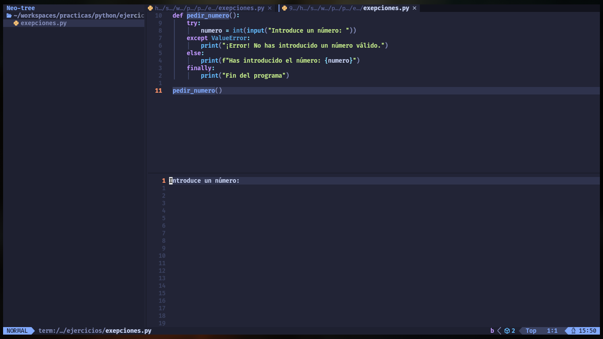
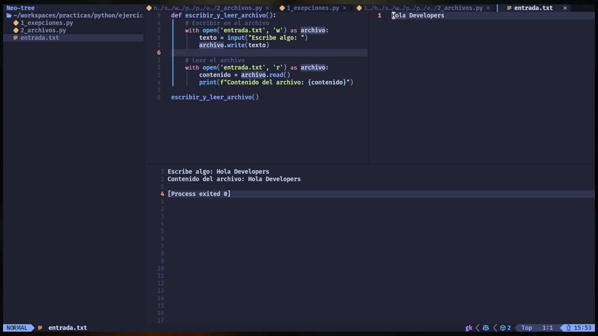
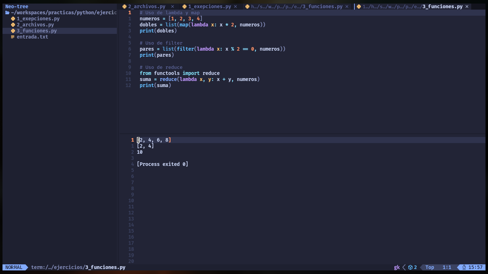
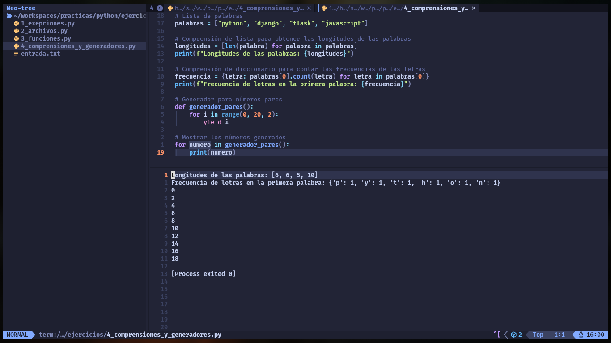
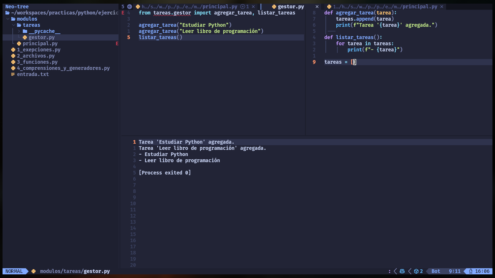
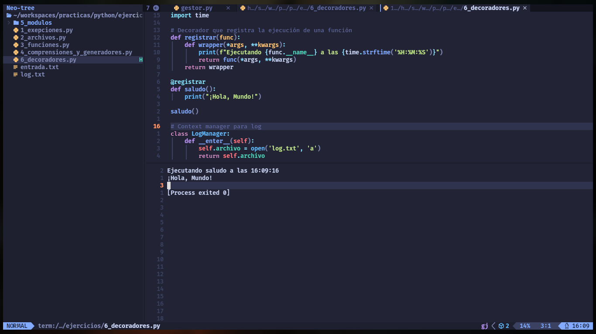
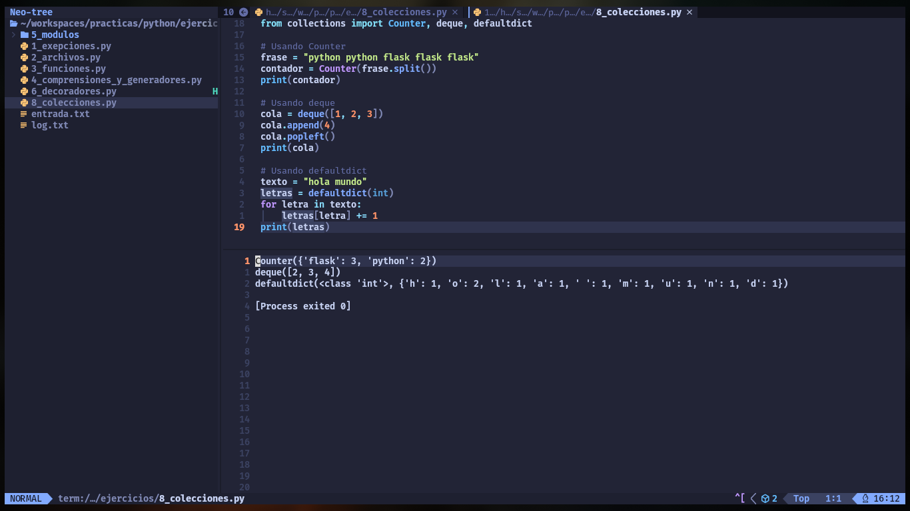
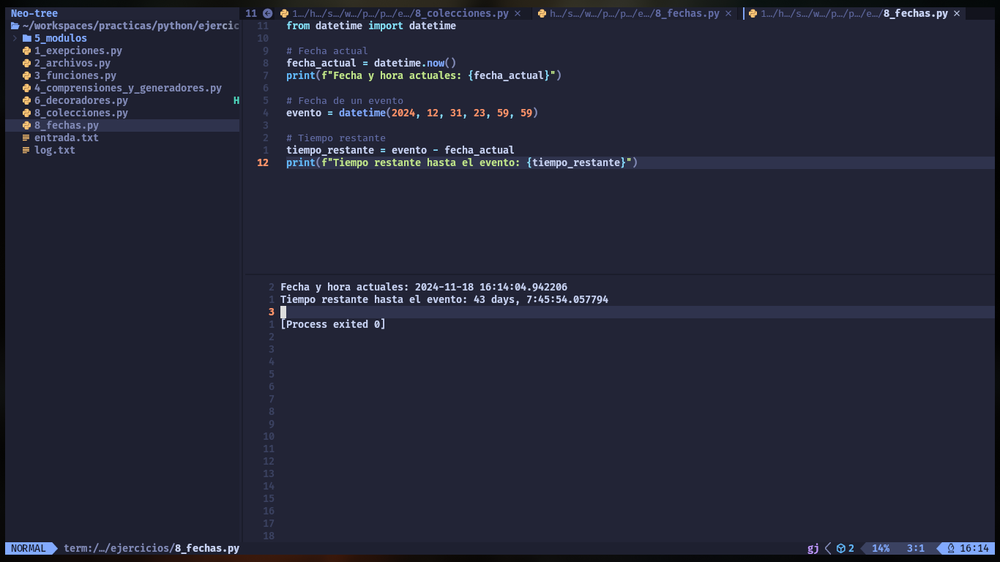
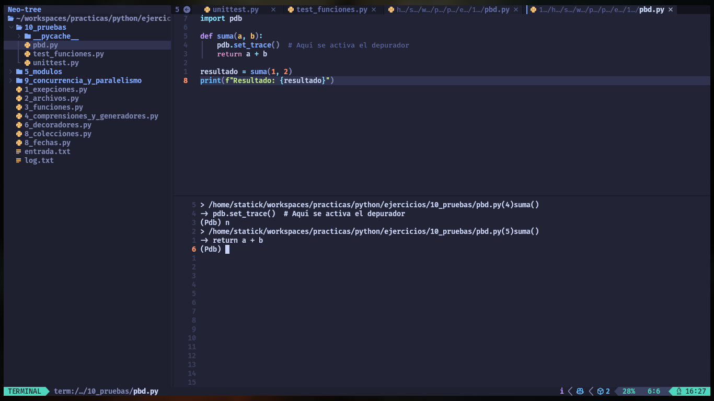

Conceptos Avanzados en Python
1. Excepciones y Manejo de Errores

El manejo adecuado de errores es esencial para escribir código robusto. Las excepciones permiten manejar situaciones inesperadas durante la ejecución de un programa sin que este termine abruptamente.
Conceptos clave
- try: Bloque donde intentamos ejecutar código que puede generar una excepción.
- except: Bloque donde capturamos y gestionamos una excepción.
- else: Bloque que se ejecuta si no hay excepciones.
- finally: Bloque que se ejecuta independientemente de si hubo una excepción o no.
Ejemplo
try:
numero = int(input("Introduce un número: "))
except ValueError as e:
print(f"Error: {e}. Introduce un número válido.")
else:
print(f"El número es {numero}.")
finally:
print("Operación terminada.")Excepciones personalizadas
Podemos crear nuestras propias excepciones para situaciones específicas.
class MiError(Exception):
def __init__(self, mensaje):
self.mensaje = mensaje
super().__init__(self.mensaje)
try:
raise MiError("Algo salió mal")
except MiError as e:
print(f"Capturado: {e}")Ejemplo Práctico
Objetivo:
Aprender a manejar excepciones en Python para crear un programa robusto que gestione entradas de usuario incorrectas.
Descripción: Crear un programa que pida al usuario un número, y en caso de que se ingrese algo que no sea un número, maneje el error de manera adecuada, mostrando un mensaje informativo.
Instrucciones:
Utiliza un bloque try-except para manejar excepciones de tipo ValueError.
Agrega un bloque else para confirmar la entrada del usuario si es válida.
Incluye un bloque finally que imprima un mensaje de despedida.
Código:
def pedir_numero():
try:
numero = int(input("Introduce un número: "))
except ValueError:
print("¡Error! No has introducido un número válido.")
else:
print(f"Has introducido el número: {numero}")
finally:
print("Fin del programa")
pedir_numero()2. Lectura y Escritura de Archivos

Leer y escribir archivos es una habilidad básica en el desarrollo de aplicaciones, como para guardar configuraciones o almacenar datos de usuarios.
Conceptos clave
open: Función para abrir archivos.
Modos de apertura:
‘r’: Lectura.
‘w’: Escritura.
‘a’: Añadir datos.
El contexto with: Manejo automático de recursos.
Ejemplo
# Escritura en archivo
with open('archivo.txt', 'w') as f:
f.write("Hola, Mundo!\n")
# Lectura de archivo
with open('archivo.txt', 'r') as f:
contenido = f.read()
print(contenido)Archivos binarios
Podemos manejar archivos binarios usando el modo ‘rb’ o ‘wb’:
# Lectura binaria
with open('imagen.jpg', 'rb') as f:
datos = f.read()Ejemplo Práctico
Objetivo:
Aprender a leer y escribir archivos de texto en Python.
Descripción: Crear un programa que pida al usuario un texto y lo escriba en un archivo de texto. Luego, el programa debe leer el archivo y mostrar su contenido.
Instrucciones:
Pide un texto al usuario.
Escribe ese texto en un archivo llamado entrada.txt.
Luego, lee el archivo y muestra su contenido en la consola.
Código:
def escribir_y_leer_archivo():
# Escribir en el archivo
with open('entrada.txt', 'w') as archivo:
texto = input("Escribe algo: ")
archivo.write(texto)
# Leer el archivo
with open('entrada.txt', 'r') as archivo:
contenido = archivo.read()
print(f"Contenido del archivo: {contenido}")
escribir_y_leer_archivo()3. Programación Funcional

Python soporta parcialmente la programación funcional, lo que permite escribir código más limpio y conciso.
Conceptos clave
lambda: Funciones anónimas.
map: Aplica una función a cada ítem de un iterable.
filter: Filtra elementos de un iterable según una condición.
reduce: Reducción de un iterable a un único valor.
Comprensión de listas y generadores.
Ejemplo
# Uso de lambda y map
numeros = [1, 2, 3, 4]
dobles = list(map(lambda x: x * 2, numeros))
print(dobles)
# Uso de filter
pares = list(filter(lambda x: x % 2 == 0, numeros))
print(pares)
# Uso de reduce
from functools import reduce
suma = reduce(lambda x, y: x + y, numeros)
print(suma)Ejemplo Práctico
Objetivo:
Aprender a utilizar funciones lambda y operaciones como map, filter y reduce para trabajar con colecciones de datos.
Descripción:
Crear un programa que utilice una lista de números para aplicar operaciones funcionales usando lambda, map, filter y reduce.
Instrucciones:
Crea una lista de números del 1 al 10.
Usa map con una función lambda para obtener el doble de cada número.
Usa filter para filtrar solo los números pares.
Usa reduce para obtener la suma de todos los números en la lista.
Código:
from functools import reduce
# Lista de números
numeros = [1, 2, 3, 4, 5, 6, 7, 8, 9, 10]
# Usando map con lambda
dobles = list(map(lambda x: x * 2, numeros))
print(f"Lista de dobles: {dobles}")
# Usando filter con lambda
pares = list(filter(lambda x: x % 2 == 0, numeros))
print(f"Números pares: {pares}")
# Usando reduce con lambda
suma = reduce(lambda x, y: x + y, numeros)
print(f"Suma de números: {suma}")4. Comprensiones y Generadores

Las comprensiones proporcionan una manera más compacta de crear colecciones. Los generadores permiten trabajar con grandes volúmenes de datos de manera eficiente.
Conceptos clave
Comprensión de listas, diccionarios y conjuntos.
Generadores y yield.
Ejemplo
# Comprensión de lista
cuadrados = [x**2 for x in range(5)]
print(cuadrados)
# Generador
def contador():
for i in range(5):
yield i
gen = contador()
for valor in gen:
print(valor)Ejemplo Práctico
Objetivo:
Aprender a crear listas, diccionarios y generadores utilizando comprensiones y el comando yield.
Descripción:
Crea un programa que use comprensiones de listas y diccionarios para realizar operaciones sobre una lista de palabras, y usa un generador para crear una secuencia de números.
Instrucciones:
Usa una comprensión de lista para crear una lista de las longitudes de las palabras.
Usa una comprensión de diccionario para contar la frecuencia de cada letra en un conjunto de palabras.
Usa un generador para producir los primeros 10 números pares.
Código:
# Lista de palabras
palabras = ["python", "django", "flask", "javascript"]
# Comprensión de lista para obtener las longitudes de las palabras
longitudes = [len(palabra) for palabra in palabras]
print(f"Longitudes de las palabras: {longitudes}")
# Comprensión de diccionario para contar las frecuencias de las letras
frecuencia = {letra: palabras[0].count(letra) for letra in palabras[0]}
print(f"Frecuencia de letras en la primera palabra: {frecuencia}")
# Generador para números pares
def generador_pares():
for i in range(0, 20, 2):
yield i
# Mostrar los números generados
for numero in generador_pares():
print(numero)5. Módulos y Paquetes Avanzados

Organizar el código en módulos y paquetes es fundamental para proyectos grandes.
Conceptos clave
Importación relativa y absoluta.
init.py: Archivo necesario para que un directorio sea reconocido como un paquete.
Gestión de dependencias.
Ejemplo
# Importación absoluta
import mi_modulo
# Importación relativa
from . import mi_moduloEjemplo Práctico
Objetivo:
Aprender a organizar el código en módulos y paquetes para proyectos más grandes.
Descripción:
Crea un proyecto con múltiples archivos Python y organiza el código en módulos. Simula un programa de gestión de tareas.
Instrucciones:
Crea una carpeta llamada tareas.
Dentro de esa carpeta, crea tres archivos:
init.py: Para inicializar el paquete.
gestor.py: Para gestionar tareas.
principal.py: Para ejecutar el programa.
Código:
gestor.py:
def agregar_tarea(tarea):
tareas.append(tarea)
print(f"Tarea '{tarea}' agregada.")
def listar_tareas():
for tarea in tareas:
print(f"- {tarea}")
tareas = []principal.py:
from tareas.gestor import agregar_tarea, listar_tareas
agregar_tarea("Estudiar Python")
agregar_tarea("Leer libro de programación")
listar_tareas()6. Decoradores y Context Managers

Los decoradores permiten modificar el comportamiento de una función, mientras que los context managers gestionan recursos como archivos o conexiones a bases de datos.
Conceptos clave
(decorator?): Sintaxis para aplicar un decorador.
with y enter, exit: Para crear context managers.
Ejemplo
# Decorador
def mi_decorador(func):
def wrapper():
print("Antes de la función")
func()
print("Después de la función")
return wrapper
@mi_decorador
def saludo():
print("Hola")
saludo()
# Context manager
class MiContexto:
def __enter__(self):
print("Entrando al contexto")
return self
def __exit__(self, exc_type, exc_value, traceback):
print("Saliendo del contexto")
with MiContexto():
print("Dentro del contexto")Ejemplo Práctico
Objetivo:
Aprender a crear decoradores y context managers en Python.
Descripción: Crea un decorador que registre la ejecución de una función y un context manager que gestione un archivo de log.
Instrucciones:
Crea un decorador que imprima la fecha y hora de la ejecución de una función.
Crea un context manager que gestione la apertura y cierre de un archivo de log.
Código:
import time
# Decorador que registra la ejecución de una función
def registrar(func):
def wrapper(*args, **kwargs):
print(f"Ejecutando {func.__name__} a las {time.strftime('%H:%M:%S')}")
return func(*args, **kwargs)
return wrapper
@registrar
def saludo():
print("¡Hola, Mundo!")
saludo()
# Context manager para log
class LogManager:
def __enter__(self):
self.archivo = open('log.txt', 'a')
return self.archivo
def __exit__(self, exc_type, exc_value, traceback):
self.archivo.close()
with LogManager() as log:
log.write(f"Acción registrada a las {time.strftime('%H:%M:%S')}\n")7. Colecciones de Datos y Estructuras Especializadas

La librería collections ofrece estructuras de datos útiles para optimizar el código.
Conceptos clave
Counter: Cuenta elementos.
deque: Cola de doble extremo.
defaultdict: Diccionario con valores predeterminados.
namedtuple: Tupla con nombre.
Ejemplo
from collections import Counter, deque, defaultdict, namedtuple
# Counter
c = Counter([1, 2, 2, 3])
print(c)
# deque
d = deque([1, 2, 3])
d.append(4)
print(d)
# defaultdict
dd = defaultdict(int)
dd['a'] += 1
print(dd)
# namedtuple
Persona = namedtuple('Persona', 'nombre edad')
persona = Persona(nombre='Juan', edad=30)
print(persona.nombre)Ejemplo Práctico
Objetivo:
Aprender a utilizar estructuras de datos avanzadas como Counter, deque y defaultdict.
Descripción:
Crea un programa que utilice Counter para contar elementos, deque para manipular una cola y defaultdict para un diccionario con valores predeterminados.
Instrucciones:
Usa Counter para contar las palabras en una frase.
Usa deque para simular una cola.
Usa defaultdict para contar ocurrencias de letras en un texto. | Código:
from collections import Counter, deque, defaultdict
# Usando Counter
frase = "python python flask flask flask"
contador = Counter(frase.split())
print(contador)
# Usando deque
cola = deque([1, 2, 3])
cola.append(4)
cola.popleft()
print(cola)
# Usando defaultdict
texto = "hola mundo"
letras = defaultdict(int)
for letra in texto:
letras[letra] += 1
print(letras)8. Manipulación de Fechas y Tiempos

Trabajar con fechas y horas es una parte fundamental en muchas aplicaciones.
Conceptos clave
datetime: Para trabajar con fechas y horas.
time: Para trabajar con tiempos.
pytz: Para manejar zonas horarias.
Ejemplo
from datetime import datetime
# Fecha y hora actuales
ahora = datetime.now()
print(ahora)
# Formateo de fecha
fecha_formateada = ahora.strftime("%Y-%m-%d %H:%M:%S")
print(fecha_formateada)Ejemplo Práctico
Objetivo:
Aprender a trabajar con fechas y horas utilizando el módulo datetime.
Descripción: Crea un programa que calcule el tiempo restante hasta un evento futuro.
Instrucciones:
Usa datetime para calcular la fecha y hora actuales.
Calcula el tiempo restante hasta un evento programado (por ejemplo, fin de año).
Código:
from datetime import datetime
# Fecha actual
fecha_actual = datetime.now()
print(f"Fecha y hora actuales: {fecha_actual}")
# Fecha de un evento
evento = datetime(2024, 12, 31, 23, 59, 59)
# Tiempo restante
tiempo_restante = evento - fecha_actual
print(f"Tiempo restante hasta el evento: {tiempo_restante}")9. Concurrencia y Paralelismo
En aplicaciones que requieren ejecutar múltiples tareas simultáneamente, la concurrencia y el paralelismo permiten mejorar el rendimiento.
Conceptos clave
threading: Hilos de ejecución.
multiprocessing: Procesos independientes.
asyncio y async/await: Manejo de tareas asincrónicas.
Ejemplo
import threading
def tarea():
print("Tarea ejecutada por hilo")
# Crear un hilo
hilo = threading.Thread(target=tarea)
hilo.start()
hilo.join()Ejemplo Práctico
Objetivo:
Aprender a utilizar técnicas de concurrencia y paralelismo para ejecutar tareas de manera simultánea y mejorar el rendimiento de las aplicaciones.
Descripción:
En este ejemplo se utilizan tres enfoques diferentes de concurrencia: threading, multiprocessing y asyncio. Cada uno es útil en diferentes escenarios según la naturaleza de la tarea que se quiere realizar.
Instrucciones:
Crea una función simple que imprima un mensaje.
Implementa la ejecución concurrente de esa función utilizando threading, multiprocessing y asyncio.
Ejemplos prácticos:
1. Uso de threading:
El módulo threading permite ejecutar funciones de forma concurrente en múltiples hilos dentro de un solo proceso.
import threading
def tarea():
print("Tarea ejecutada por hilo")
# Crear un hilo
hilo = threading.Thread(target=tarea)
hilo.start()
hilo.join() # Esperar a que termine la ejecución del hilo
print("Hilo terminado")2. Uso de multiprocessing:
El módulo multiprocessing permite ejecutar funciones en múltiples procesos independientes, lo que es útil para tareas que consumen mucho CPU.
import multiprocessing
def tarea():
print("Tarea ejecutada por proceso")
# Crear un proceso
proceso = multiprocessing.Process(target=tarea)
proceso.start()
proceso.join() # Esperar a que termine la ejecución del proceso
print("Proceso terminado")3. Uso de asyncio y async/await:
El módulo asyncio permite manejar operaciones de entrada/salida asincrónicas de manera eficiente, sin bloquear el hilo principal.
import asyncio
async def tarea():
print("Tarea asincrónica ejecutada")
await asyncio.sleep(2) # Simula una tarea asincrónica con espera
print("Tarea asincrónica terminada")
# Ejecutar tareas asincrónicas
async def main():
await asyncio.gather(tarea(), tarea())
asyncio.run(main()) # Ejecuta el bucle de eventos10. Pruebas y Debugging

Escribir pruebas y depurar el código son prácticas esenciales para garantizar la calidad y facilitar el mantenimiento.
Conceptos clave
unittest y pytest: Frameworks para pruebas.
assert: Para comprobar condiciones.
pdb: Para depuración interactiva.
Ejemplo
# Prueba simple con unittest
import unittest
def suma(a, b):
return a + b
class TestSuma(unittest.TestCase):
def test_suma(self):
self.assertEqual(suma(1, 2), 3)
if __name__ == '__main__':
unittest.main()Ejemplo Práctico
Objetivo:
Aprender a escribir pruebas unitarias y utilizar herramientas de depuración para asegurar la calidad del código.
Descripción:
En este tema se cubren pruebas unitarias con unittest, depuración con pdb y el uso de pytest para realizar pruebas automatizadas.
Instrucciones:
Escribe pruebas unitarias para una función que realiza una operación matemática (suma).
Aprende a utilizar el depurador pdb para inspeccionar el flujo de ejecución.
Ejemplos prácticos:
1. Pruebas con unittest:
El módulo unittest permite crear casos de prueba, asegurando que el código funcione correctamente.
import unittest
# Función simple que vamos a probar
def suma(a, b):
return a + b
# Clase de prueba
class TestSuma(unittest.TestCase):
def test_suma(self):
self.assertEqual(suma(1, 2), 3) # Verifica que la suma de 1 y 2 sea 3
if __name__ == '__main__':
unittest.main() # Ejecuta las pruebas2. Pruebas con pytest:
pytest es una alternativa moderna y más sencilla para realizar pruebas. Aquí utilizamos el mismo ejemplo de la función suma.
# Guarda esto en un archivo llamado test_funciones.py
def suma(a, b):
return a + b
def test_suma():
assert suma(1, 2) == 3 # Verifica que la suma de 1 y 2 sea 3Ejecuta las pruebas con el comando:
pytest test_funciones.py3. Depuración con pdb:
El depurador pdb permite interactuar con el código paso a paso, inspectando variables y el flujo de ejecución.
import pdb
def suma(a, b):
pdb.set_trace() # Aquí se activa el depurador
return a + b
resultado = suma(1, 2)
print(f"Resultado: {resultado}")Cuando ejecutes el programa, el depurador se activará en pdb.set_trace(). Desde ahí, podrás usar comandos como n para avanzar a la siguiente línea o p para imprimir el valor de una variable.
Comandos útiles de pdb:
n: Ejecuta la siguiente línea de código.
p variable: Muestra el valor de una variable.
q: Sale del depurador
Este capítulo cubre varios de los aspectos más avanzados de Python, y proporciona una base sólida para desarrollar aplicaciones web fullstack más complejas. Los ejemplos prácticos te ayudarán a entender cómo aplicar estos conceptos en situaciones reales.